Altri workshop e laboratori a Torino e dintorni
Workshop di candele, saponi, fotografia, origami, rilegatura, fablab e altri laboratori a Torino e dintorni.
Cerca tutti i workshop52 attività in programma · aggiornato il 23 novembre 2026
 dal3novAltroGiocare coi segni: introduzione alla LISda martedì 3 novembre a martedì 15 dicembre, 18:30Vanchiglietta (TO)con Bocciofila Vanchiglietta
dal3novAltroGiocare coi segni: introduzione alla LISda martedì 3 novembre a martedì 15 dicembre, 18:30Vanchiglietta (TO)con Bocciofila Vanchiglietta lun23novAltroMini-workshop di Natale: decorazione in vetrolunedì 23 novembre, 19:00–21:00Torino · 35 €con Across the Glass
lun23novAltroMini-workshop di Natale: decorazione in vetrolunedì 23 novembre, 19:00–21:00Torino · 35 €con Across the Glass- mar24novAltroCandele di Natale: il calice delle festemartedì 24 novembreDemonte (CN) · 25 €con Philo Etico per Locanda Lubac
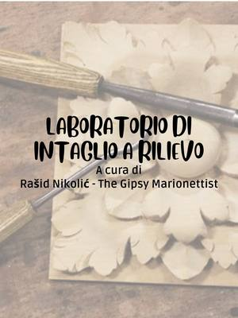
dal10novAltroIntaglio a rilievo: bassorilievi in legnoda martedì 10 novembre a martedì 1 dicembre, ogni martedì, 19:00–21:30Barriera di Milano (TO)con Rašid Nikolić (The Gipsy Marionettist) per Bagni Pubblici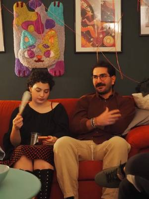
mer25novAltroAppo: incontro di poesiamercoledì 25 novembre, 18:00Vanchiglia (TO) · Gratiscon Approdo Poetico Torino per Spazio Costanza mer25novAltroHow To: stampa 3D per iniziaremercoledì 25 novembre, 18:00–19:30Lingotto (TO) · esauritocon Fablab Torino
mer25novAltroHow To: stampa 3D per iniziaremercoledì 25 novembre, 18:00–19:30Lingotto (TO) · esauritocon Fablab Torino gio26novAltroGrupo de Conversación: pratica di spagnologiovedì 26 novembre, 18:00–19:30Vanchiglia (TO)con Libreria Sur
gio26novAltroGrupo de Conversación: pratica di spagnologiovedì 26 novembre, 18:00–19:30Vanchiglia (TO)con Libreria Sur- ven27novAltroAtelier della Tenuta: calice candelavenerdì 27 novembreBoves (CN) · 40 €con Philo Etico per Tenuta Carpe Diem
- ven27novAltroGrupo de Conversação: pratica di portoghesevenerdì 27 novembre, 18:00–19:30Vanchiglia (TO)con Libreria Sur
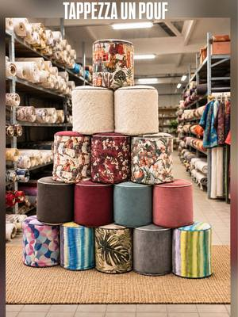
ven27novAltroWorkshop di tappezzeria: pouf tondovenerdì 27 novembre, 18:00–20:00Barriera di Milano (TO) · 100 €con Magazzini Tessili- ven27novAltroNoche de OWO: tarocchi ed escape roomvenerdì 27 novembre, 18:00–23:00Quadrilatero (TO) · Gratiscon One Way Out
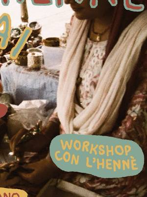
sab28novAltroYoga & Henné & Chai: decorazioni con l’hennésabato 28 novembre, 09:00–11:30Boves (CN)con Flow Studio sab28novAltroLanterne di Natale: laboratorio creativosabato 28 novembre, 09:30–17:00Borgo Po (TO)con Laura Cortinovis per TObed
sab28novAltroLanterne di Natale: laboratorio creativosabato 28 novembre, 09:30–17:00Borgo Po (TO)con Laura Cortinovis per TObed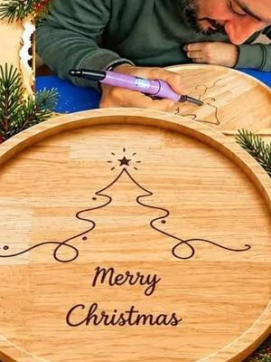
sab28novAltroWorkshop di pirografia: vassoio nataliziosabato 28 novembre, 10:00–12:00Pozzo Strada (TO) · 20 €con Luke Expression per Spazio Saper Fare sab28novAltroChristmas Lab Brunch: palline di Natalesabato 28 novembre, 10:00Borgo San Dalmazzo (CN)con Villa Teresa
sab28novAltroChristmas Lab Brunch: palline di Natalesabato 28 novembre, 10:00Borgo San Dalmazzo (CN)con Villa Teresa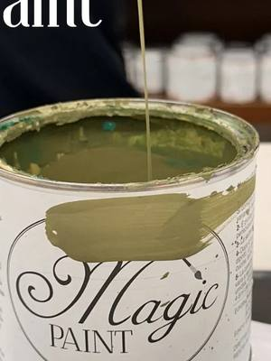
sab28novAltroRestyling Magic Paint: un oggetto da reinventaresabato 28 novembre, 11:00–18:00Cit Turin (TO) · 130 €con Me Gusta sab28novAltroWorkshop di aromaterapia: oli per l’invernosabato 28 novembre, 15:00–19:00Poirino (TO) · 50 €con Erboristeria La Calendula
sab28novAltroWorkshop di aromaterapia: oli per l’invernosabato 28 novembre, 15:00–19:00Poirino (TO) · 50 €con Erboristeria La Calendula- sab28novAltroKREA: vasetto dipinto e candelasabato 28 novembre, 15:30–17:30Pianfei (CN) · 32 €con Philo Etico per Alter Ego
 sab28novAltroTarot Reading: tarocchi e vintagesabato 28 novembre, 15:30–18:00Centro (TO) · Gratiscon Tarot with Love per Lizzy Vintage
sab28novAltroTarot Reading: tarocchi e vintagesabato 28 novembre, 15:30–18:00Centro (TO) · Gratiscon Tarot with Love per Lizzy Vintage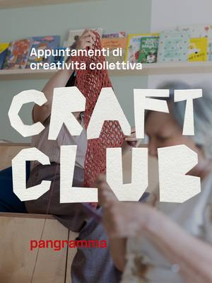
sab28novAltroCraft Club: pomeriggio creativo collettivosabato 28 novembre, 16:00Cenisia (TO) · Gratiscon Pangramma sab28novAltroLa via dei Tarocchi: introduzione alla letturasabato 28 novembre, 16:30–18:30San Paolo (TO) · da 15 €con Riccardo Cappa per Ippoderma
sab28novAltroLa via dei Tarocchi: introduzione alla letturasabato 28 novembre, 16:30–18:30San Paolo (TO) · da 15 €con Riccardo Cappa per Ippoderma- dom29novAltroWorkshop di candele: candlemakingdomenica 29 novembreAsti (AT)con Il Tempio Creativo per Mysa
 dom29novAltroPomeriggio creativo: collage, colori e decoridomenica 29 novembre, 15:00–17:00San Salvario (TO) · 20 €con Mosca Bianca di Gaia Sandrelli
dom29novAltroPomeriggio creativo: collage, colori e decoridomenica 29 novembre, 15:00–17:00San Salvario (TO) · 20 €con Mosca Bianca di Gaia Sandrelli mer2dicAltroWorkshop di decoden: cover di Natalemercoledì 2 dicembre, 17:15–18:30Pozzo Strada (TO) · da 15 €con Lumos Magic Decoden per Spazio Saper Fare
mer2dicAltroWorkshop di decoden: cover di Natalemercoledì 2 dicembre, 17:15–18:30Pozzo Strada (TO) · da 15 €con Lumos Magic Decoden per Spazio Saper Fare mer2dicAltroCrea il tuo regalo: balsamo naturalemercoledì 2 dicembre, 18:00–20:00San Salvario (TO)con Il Laboratorio di Abigail per Retrobottega
mer2dicAltroCrea il tuo regalo: balsamo naturalemercoledì 2 dicembre, 18:00–20:00San Salvario (TO)con Il Laboratorio di Abigail per Retrobottega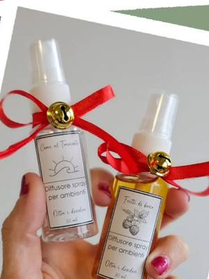
mer2dicAltroAperiworkshop: spray e profumatori in cera di soiamercoledì 2 dicembre, 18:30–20:30Centro (TO) · 35 €con Oltre i Desideri per Winelivery- mer2dicAltroOpen Studio di Natale: regali e decorazionimercoledì 2 dicembre, 19:00–21:30Aurora (TO) · 15 € a seratacon Velvet Truffle Riot
- gio3dicAltroLaboratorio creativo: serata con aperitivogiovedì 3 dicembre, 19:00Cuneo (CN) · 27 €con Philo Etico per Celeste Caffè
- ven4dicAltroIl profumo della presenza: incenso naturalevenerdì 4 dicembre, 18:00–20:00San Salvario (TO) · 45 €con Masala Studio con Terra Yoga
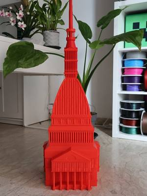
sab5dicAltroWorkshop di stampa 3D: box regalo di Natalesabato 5 dicembreTorinocon Hiki3D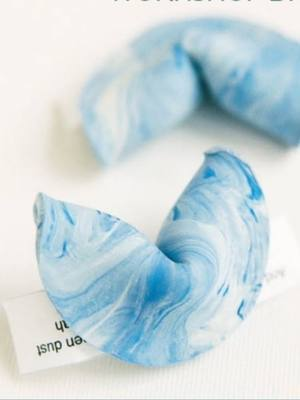
sab5dicAltroCrea il tuo biscotto della fortuna: argilla polimericasabato 5 dicembre, 16:00–18:00Pozzo Strada (TO) · 30 €con Oltre i Desideri per Spazio Saper Fare dom6dicAltroLaboratorio di legno: uccellino meccanicodomenica 6 dicembre, 11:00–13:00San Salvario (TO) · 25 €con Edelweiss Toys per San Salvario Emporium
dom6dicAltroLaboratorio di legno: uccellino meccanicodomenica 6 dicembre, 11:00–13:00San Salvario (TO) · 25 €con Edelweiss Toys per San Salvario Emporium mer9dicAltroHow To: fresatrice CNC di Natalemercoledì 9 dicembre, 18:00–20:00Lingotto (TO) · esauritocon Damiano Frison per Fablab Torino
mer9dicAltroHow To: fresatrice CNC di Natalemercoledì 9 dicembre, 18:00–20:00Lingotto (TO) · esauritocon Damiano Frison per Fablab Torino- ven11dicAltroTroglodyte’s delight: esplorazione al buiovenerdì 11 dicembre, 18:30–21:00San Salvario (TO) · Gratiscon Sofia Salvatori per Antro
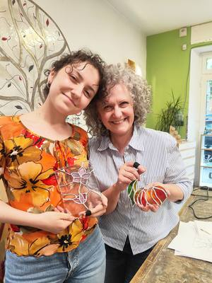
sab12dicAltroWorkshop di vetro Tiffany: speciale Natalesabato 12 dicembre, 10:00–17:00Torino · 130 €con Across the Glass- mar15dicAltroEnigmaticorbits: laboratorio di percezionemartedì 15 dicembre, 18:30–20:30San Salvario (TO) · Gratiscon Antro
- mer16dicAltroMini-workshop di Natale: decorazione in vetromercoledì 16 dicembre, 19:00–21:00Torino · 35 €con Across the Glass
- gio17dicAltroL’Oracolo dei Mutamenti: I Ching e artegiovedì 17 dicembre, 20:30–22:30San Salvario (TO) · Gratiscon Jacopo Foglietti per Antro
 sab26dicAltroPhotowalk: passeggiata fotografica in grupposabato 26 dicembre, 10:30–12:30Quadrilatero (TO) · 2 €con BlaBla Photowalk Events
sab26dicAltroPhotowalk: passeggiata fotografica in grupposabato 26 dicembre, 10:30–12:30Quadrilatero (TO) · 2 €con BlaBla Photowalk Events- sab30genAltroNotturna facile: foto con treppiedesabato 30 gennaio, 21:00Centro (TO) · da 55 €con Workshops Fotografici eu con Aldo Diazzi
- dom31genAltroWorkshop di fotografia: il panningdomenica 31 gennaio, 10:00–13:00Centro (TO) · da 55 €con Workshops Fotografici eu con Aldo Diazzi
 dom31genAltroWorkshop di street photography: foto in cittàdomenica 31 gennaio, 14:00–17:00Centro (TO) · da 55 €con Workshops Fotografici eu con Aldo Diazzi
dom31genAltroWorkshop di street photography: foto in cittàdomenica 31 gennaio, 14:00–17:00Centro (TO) · da 55 €con Workshops Fotografici eu con Aldo Diazzi dal11febAltroPrecious Plastic: oggetti dalla plastica riciclatada giovedì 11 febbraio a giovedì 11 marzo, ogni giovedì, 18:30–20:30Lingotto (TO) · 65 €con Ivan Martini per Fablab Torino
dal11febAltroPrecious Plastic: oggetti dalla plastica riciclatada giovedì 11 febbraio a giovedì 11 marzo, ogni giovedì, 18:30–20:30Lingotto (TO) · 65 €con Ivan Martini per Fablab Torino- dal20febAltroLaboratori di cosmesi naturale: sapone e cremeda sabato 20 febbraio a sabato 22 maggioProvincia di Torino (TO)con Il Laboratorio di Abigail
- mar9marAltroHow To: taglio laser in praticamartedì 9 marzo, 18:00–20:00Lingotto (TO) · 5 €con Fablab Torino
- mar16marAltroHow To: adesivi con il plotter da tagliomartedì 16 marzo, 18:00–20:00Lingotto (TO) · 5 €con Fablab Torino
 datada definireAltroCascina Roccafranca: corsi della stagioneData da definireMirafiori (TO)con Cascina Roccafranca
datada definireAltroCascina Roccafranca: corsi della stagioneData da definireMirafiori (TO)con Cascina Roccafranca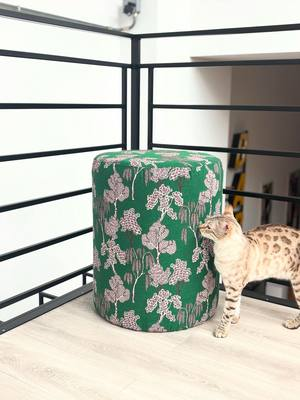
dataa sceltaAltroTappezzeria e restyling: pouf e mobiliData a sceltaBarriera di Milano (TO) · da 20 €con Magazzini Tessili- datada definireAltroCorso di fotografia: base e intermedioData da definireCentro (TO)con Ivana Sunjic per Polo Le Rosine
 datada definireAltroWorkshop di fotografia: ritratto e luceData da definireCentro (TO)con Ivana Sunjic per Polo Le Rosine
datada definireAltroWorkshop di fotografia: ritratto e luceData da definireCentro (TO)con Ivana Sunjic per Polo Le Rosine datada definireAltroCerchio di carte e Luna: intenzioni e oracoliData da definireTorinocon Tarot with Love
datada definireAltroCerchio di carte e Luna: intenzioni e oracoliData da definireTorinocon Tarot with Love datada definireAltroCorso di fotografia: fermare un’emozioneData da definireSan Mauro Torinese (TO)con Davide Furia per upTOyou
datada definireAltroCorso di fotografia: fermare un’emozioneData da definireSan Mauro Torinese (TO)con Davide Furia per upTOyou